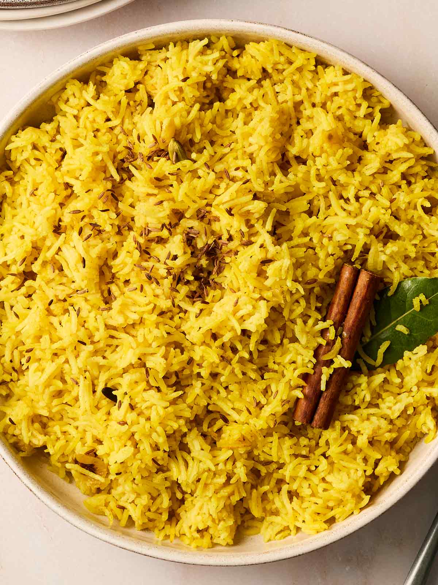

Pilau Recipe
Pilau is a flavorful rice dish that is popular in many cultures. Here is a simple recipe to make it at home.

Ingredients:
- 2 cups basmati rice
- 4 cups water
- 1 onion, finely chopped
- 2 cloves garlic, minced
- 1 teaspoon cumin seeds
- 1 teaspoon turmeric powder
- 1 teaspoon ground coriander
- Salt to taste
- 2 tablespoons vegetable oil or ghee
- Optional: vegetables or meat of your choice
Instructions:
- Rinse the basmati rice under cold water until the water runs clear. Soak the rice for 30 minutes, then drain.
- In a large pot, heat the oil or ghee over medium heat. Add the cumin seeds and let them sizzle for a few seconds.
- Add the chopped onion and sauté until golden brown. Add the minced garlic and cook for another minute.
- Add the turmeric powder and ground coriander, stirring well to combine.
- Add the drained rice to the pot and stir to coat the rice with the spices.
- Add the water and salt. Bring to a boil, then reduce the heat to low, cover, and simmer for 15-20 minutes, or until the rice is cooked and the water is absorbed.
- If desired, add vegetables or cooked meat during the last 5 minutes of cooking.
- Fluff the rice with a fork before serving. Enjoy your homemade pilau!
Back to Recipe Collection